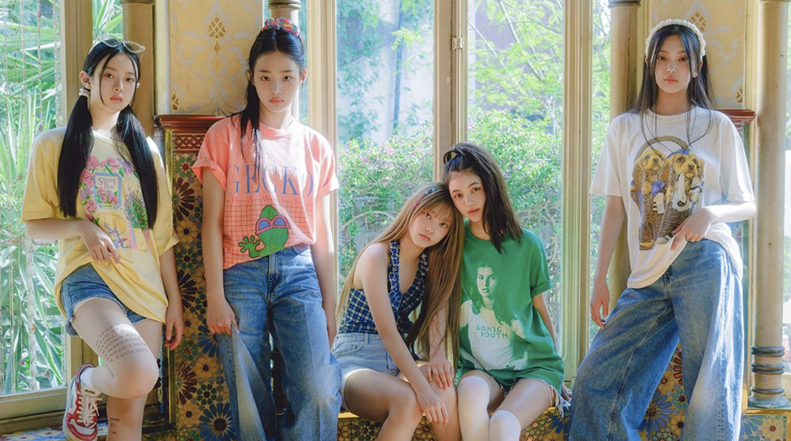

|  |
newjeans
a five-member girl group under ADOR.
member
| Minji | ⭐⭐⭐⭐⭐ |
Hanni | ⭐⭐⭐ |
| Danielle | ⭐⭐⭐ |
Haerin | ⭐⭐⭐⭐ |
| Hyein | ⭐⭐⭐ |
|
On July 1, 2019, HYBE (then-known as Big Hit) announced that Min Hee Jin would join the company as their new CBO (Chief Brand Officer), and one of her tasks is to lead a girl group project between Big Hit and Source Music.
On September 4, 2019, the Plus Global Auditions were announced. Auditions were held in 16 cities and lasted until the end of October. By the end of 2019, casting had been completed and training began at the beginning of 2020.
By September 2021, the girl group's management was transferred to ADOR.
On November 21, 2021, HYBE officially announced the launch of a new independent label, ADOR, under the agency. The label plans to launch a new girl group in 2022 and will be mainly be produced by the label's CEO, Min Hee Jin, and
Debut
| date |
history |
| 2022.07.01 |
the first teaser videos were released and it was also announced that the group would release their first content on the 22nd. |
| 2022.07.22 |
the group released the debut music video for the track "Attention" and the debut schedule for their first EP, New Jeans,
to be released digitally on August 1 and physically on August 8.
Teaser photos were released that same day. |
| 2022.08.03 |
Minji was officially announced to be the leader of the group. |
singles